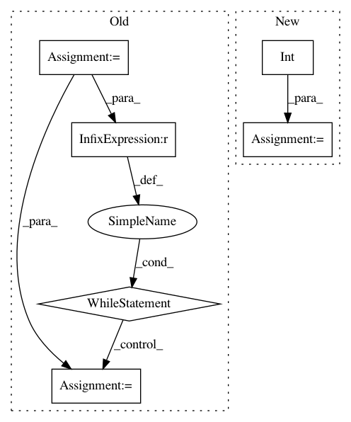

6e4be1285888e9caa90fa483e10b869ceb3157d4,waifu2x.py,,upscale_image,#Any#Any#Any#,28
Before Change
def upscale_image(src, model, cfg):
iter = 0
while iter < int(np.ceil(cfg.scale_factor / 2)):
iter += 1
six.print_("2.0x upscaling...", end=" ", flush=True)
if cfg.tta:
dst = reconstruct.image_tta(
src, model, True,
cfg.tta_level, cfg.block_size, cfg.batch_size)
else:
dst = reconstruct.image(
src, model, True, cfg.block_size, cfg.batch_size)
six.print_("OK")
if np.round(cfg.scale_factor % 2.0, 6) != 0:
six.print_("resizing...", end=" ", flush=True)
dst_w = int(np.round(src.size[0] * cfg.scale_factor))
dst_h = int(np.round(src.size[1] * cfg.scale_factor))
After Change
def upscale_image(src, model, cfg):
dst = src
log_scale = np.log2(cfg.scale_factor)
for _ in range(int(np.ceil(log_scale))):
six.print_("2.0x upscaling...", end=" ", flush=True)
if cfg.tta:
dst = reconstruct.image_tta(
dst, model, True,
cfg.tta_level, cfg.block_size, cfg.batch_size)
else:
dst = reconstruct.image(
dst, model, True, cfg.block_size, cfg.batch_size)
six.print_("OK")
if np.round(log_scale % 1.0, 6) != 0:
six.print_("Resizing...", end=" ", flush=True)
dst_w = int(np.round(src.size[0] * cfg.scale_factor))
dst_h = int(np.round(src.size[1] * cfg.scale_factor))
In pattern: SUPERPATTERN
Frequency: 3
Non-data size: 6
Instances
Project Name: tsurumeso/waifu2x-chainer
Commit Name: 6e4be1285888e9caa90fa483e10b869ceb3157d4
Time: 2017-03-03
Author: nstm101339@gmail.com
File Name: waifu2x.py
Class Name:
Method Name: upscale_image
Project Name: chainer/chainercv
Commit Name: 93cfd8bd22d6b798b94aead3c8ea75ace2727265
Time: 2019-02-18
Author: shingogo@hotmail.co.jp
File Name: chainercv/functions/ps_roi_max_align_2d.py
Class Name: PSROIMaxAlign2D
Method Name: forward_cpu
Project Name: NifTK/NiftyNet
Commit Name: f9f1242e23bc4ad0433577b81274b9a6065fbb89
Time: 2017-07-13
Author: eli.gibson@gmail.com
File Name: niftynet/utilities/misc_io.py
Class Name:
Method Name: match_volume_shape_to_patch_definition